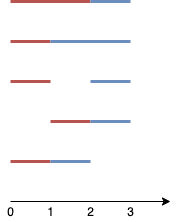

| Category | Difficulty | Likes | Dislikes |
|---|---|---|---|
| Algorithms | Medium | 483 | 50 |
amazon
Given n points on a 1-D plane, where the ith point (from 0 to n-1) is at x = i, find the number of ways we can draw exactly k non-overlapping line segments such that each segment covers two or more points. The endpoints of each segment must have integral coordinates. The k line segments do not have to cover all n points, and they are allowed to share endpoints.
Return the number of ways we can draw k non-overlapping line segments. Since this number can be huge, return it modulo 109 + 7.
Example 1:

Input: n = 4, k = 2
Output: 5
Explanation: The two line segments are shown in red and blue.
The image above shows the 5 different ways {(0,2),(2,3)}, {(0,1),(1,3)}, {(0,1),(2,3)}, {(1,2),(2,3)}, {(0,1),(1,2)}.Example 2:
Input: n = 3, k = 1
Output: 3
Explanation: The 3 ways are {(0,1)}, {(0,2)}, {(1,2)}.Example 3:
Input: n = 30, k = 7
Output: 796297179
Explanation: The total number of possible ways to draw 7 line segments is 3796297200. Taking this number modulo 109 + 7 gives us 796297179.
Constraints:
2 <= n <= 10001 <= k <= n-1